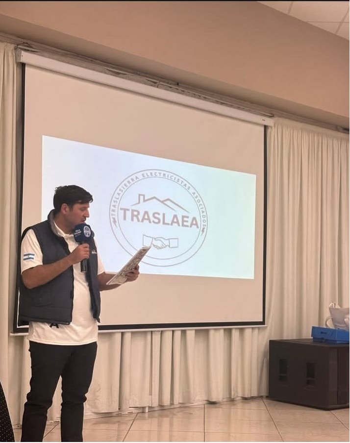

Lanzamiento Oficial TRASLAEA: Un nuevo estándar en seguridad.
Por: Comisión Directiva • 2025



"En un acto histórico por invitación de la Fundación Relevando Peligros y la Municipalidad, el Secretario Esteban Colombo presentó los lineamientos estratégicos. La asociación nace con el firme objetivo de profesionalizar el sector en todo el Valle de Traslasierra..."